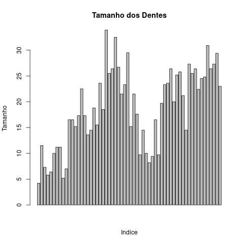
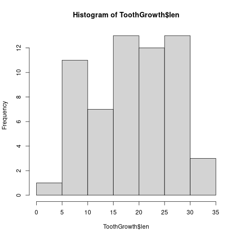
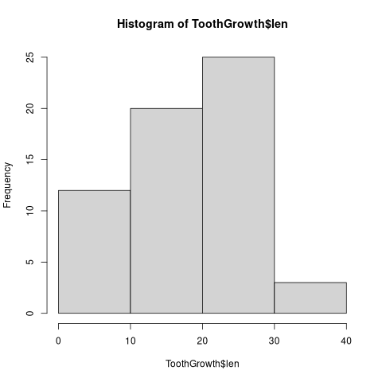
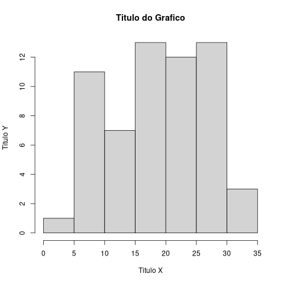
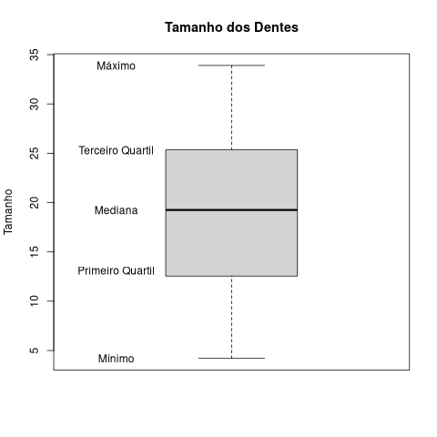
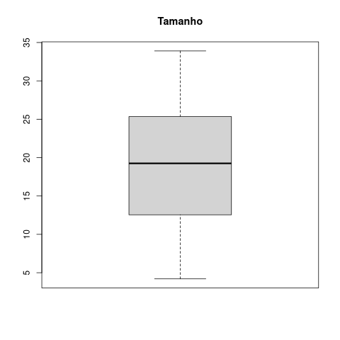
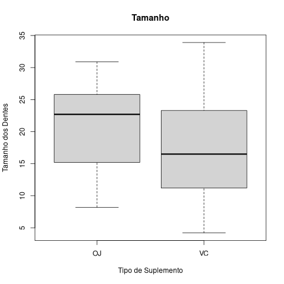

São estruturas de dados bidimensionais, comumente representados como tabelas.
numeric, factor ou character.R fornece varios conjuntos de dados por padrão, sem que precise criar ou importar algo para testes rapidos.
Um desses exemplos é o Data Frame "ToothGrowth"
ToothGrowth[1:4,]
len supp dose 1 4.2 VC 0.5 2 11.5 VC 0.5 3 7.3 VC 0.5 4 5.8 VC 0.5
Usaremos esse conjunto de dados para demonstrar o R.
head()
Para entender a estrutura de um conjunto de dados existem duas funções, a mais simples delas é head(), que mostra o nome das colunas e as seis primeiras linhas.
head(ToothGrowth)
len supp dose 1 4.2 VC 0.5 2 11.5 VC 0.5 3 7.3 VC 0.5 4 5.8 VC 0.5 5 6.4 VC 0.5 6 10.0 VC 0.5
str()A função str() mostra algumas observações sobre o Data Frame: o numero de observações, no caso do exemplo 60, a quantidade de colunas, no caso 3, e o tipo dado armazenado em cada.
str(ToothGrowth)
'data.frame': 60 obs. of 3 variables:
$ len : num 4.2 11.5 7.3 5.8 6.4 10 11.2 11.2 5.2 7 ...
$ supp: Factor w/ 2 levels "OJ","VC": 2 2 2 2 2 2 2 2 2 2 ...
$ dose: num 0.5 0.5 0.5 0.5 0.5 0.5 0.5 0.5 0.5 0.5 ...
barplot(ToothGrowth$len,
main="Tamanho dos Dentes",
xlab="Indice",
ylab="Tamanho")

Grafico usado para anlise de frequencia em um conjunto de dados, possui suporte pela função hist() ou por bibliotecas como ggplot2, estudaremos a função padrão em R.
hist(ToothGrowth$len)

hist() recebe um vetor de dados x.hist(ToothGrowth$len,
breaks=c(0,10,20,30,40))

hist(ToothGrowth$len,
main="Titulo do Grafico",
xlab="Titulo X",
ylab="Titulo Y")

min(ToothGrowth$len)
[1] 4.2
max(ToothGrowth$len)
[1] 33.9
mean(ToothGrowth$len)
[1] 18.81333
sd(ToothGrowth$len)
[1] 7.649315
quartile(dados, prob=.25)
quartile(dados, prob=.5)
quartile(dados, prob=.75)

summary()Todos os dados apresentados antes podem ser calculados com uma unica função.
summary(ToothGrowth$len)
Min. 1st Qu. Median Mean 3rd Qu. Max. 4.20 13.07 19.25 18.81 25.27 33.90
Essa função também funciona em Data Frames inteiros.
summary(ToothGrowth)
len supp dose
Min. : 4.20 OJ:30 Min. :0.500
1st Qu.:13.07 VC:30 1st Qu.:0.500
Median :19.25 Median :1.000
Mean :18.81 Mean :1.167
3rd Qu.:25.27 3rd Qu.:2.000
Max. :33.90 Max. :2.000
Uma das formas para visualizar os quartis é o grafico boxplot, como mostrado anteriormente ele exibe a divisão dos quartis sobre os dados.
boxplot(ToothGrowth$len,
main = "Tamanho")

boxplot(ToothGrowth$len[ToothGrowth$supp=="OJ"],
ToothGrowth$len[ToothGrowth$supp=="VC"],
main = "Tamanho", names = c("OJ","VC"),
xlab="Tipo de Suplemento", ylab="Tamanho dos Dentes")

Arquivos JSON:
library(jsonlite)
setwd("/seu/diretorio/atual")
dados <- as.data.frame(fromJSON(txt='arquivo.json'))
Arquivos Tipo CSV:
setwd("/seu/diretorio/atual")
dados <- read.table("activity.data",
header = TRUE,
sep=",")